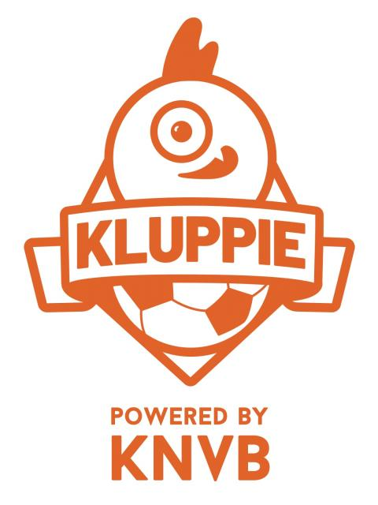

-

KNVB Kluppie is een app waarin een virtueel wezen zich bevind. Dit wezen moet ervoor zorgen dat kinderen gemotiveerd worden om meer te gaan sporten, omdat op dit moment kinderen veel vaker binnen zitten te gamen, wat met de generatie mee is gegroeid. Vroeger gingen veel kinderen buiten een balletje trappen en tegenwoordig spelen ze online FIFA.
Kluppie telde het aantal stappen van de kinderen wat gemeten werd door wearables. Voor het aantal stappen kregen de gebruikers een beloning. De beloning waren muntjes binnen de app waarmee ze hun Kluppie een leuke make over kunnen geven door bijvoorbeeld kleding te kopen van die muntjes. Hierdoor raakte kinderen gemotiveerd om meer stappen te zetten zodat ze meer muntjes kregen en dus hun Kluppie leuker eruit konden laten zien.
De technologie die gebruikt wordt in Kluppie, is Augmented Reality om Kluppie in het echt te laten tonen doormiddel van een camera. Zo kan Kluppie bijvoorbeeld naast je aan de eettafel zitten. AR is niet de enigste technologie die in de app zit. Er wordt namelijk ook nog gebruik gemaakt van geluid, waardoor het nog interactiever wordt en Kluppie tegen je kan praten.
Dit project is een leuk voorbeeld van AR/VR. Het maakt op een interactieve manier gebruik van technologie en spoort de kinderen ook nog aan om fitter te worden en niet binnen te blijven zitten.
Ik vind dit een interessant project, omdat ik zelf ook een liefhebber ben van sporten. Ik heb de overgang van buiten voetballen, naar binnen achter de tv gamen zelf meegemaakt. Zelf had ik het niet door dat ik zo weinig meer buiten kwam. Dit besefte ik pas op een latere leeftijd, waardoor ik in ben gaan zien dat het belangrijk is om kinderen aan te sporen om buiten te laten sporten. In mijn jeugd had ik niet zulke apps die ik buiten kon gebruiken, wat mij misschien wel had kunnen helpen om buiten te blijven.